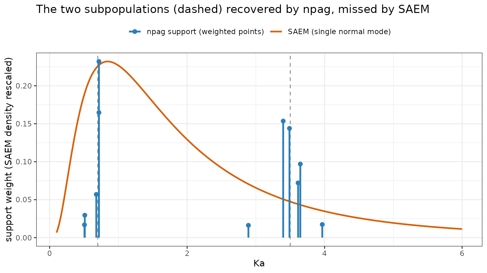
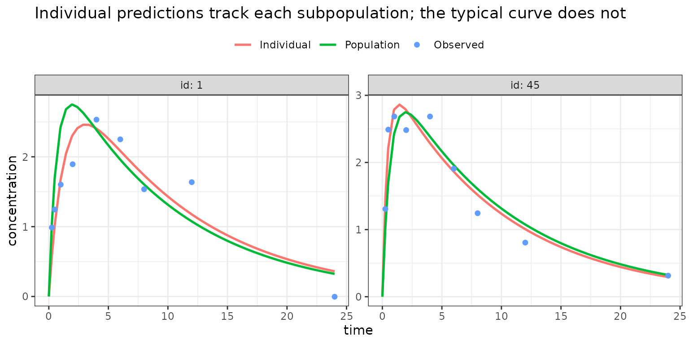
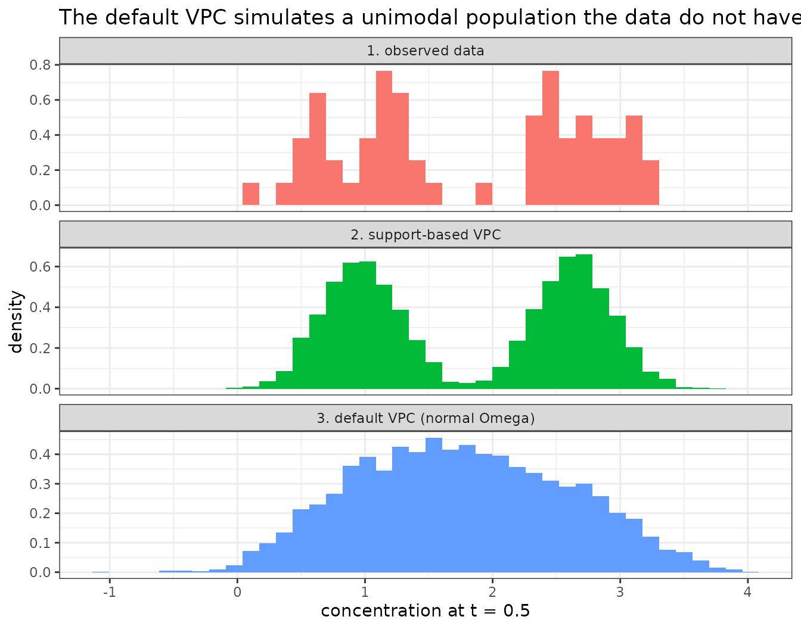
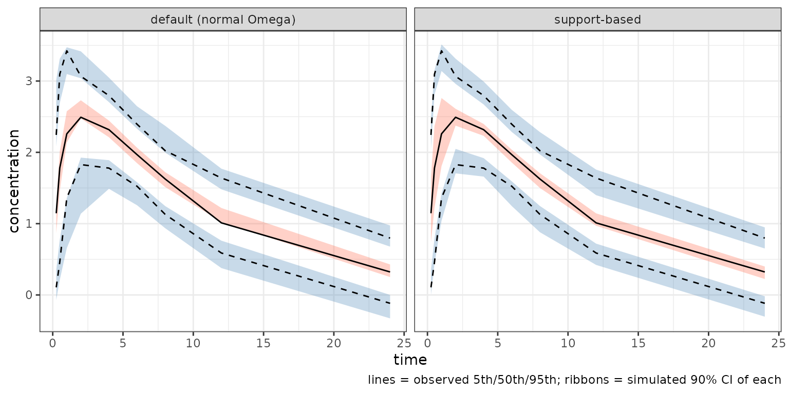

Nonparametric NLME in nlmixr2 (npag/npb) versus Pmetrics (NPAG/NPOD)
2026-09-18
Source:vignettes/articles/nonparametric-npag-npb.Rmd
nonparametric-npag-npb.RmdNonparametric population methods (est = "npag",
est = "npb")
nlmixr2 now ships two nonparametric
estimation methods:
-
est = "npag"– the Nonparametric Adaptive Grid (Yamada 2021), a deterministic, convex nonparametric maximum-likelihood (NPML) method; and -
est = "npb"– Nonparametric Bayes, a truncated stick-breaking Dirichlet-process mixture sampled by a blocked Metropolis-within-Gibbs sampler (Tatarinova 2013; Ishwaran & James truncation).
Both estimate the entire between-subject parameter
distribution as a set of discrete support points with
weights, instead of assuming it is multivariate normal the way
FOCEI and SAEM do. Where a parametric model summarizes between-subject
variability with a single Omega matrix, a nonparametric
model can represent any shape – skew, heavy tails, and,
most usefully, multiple subpopulations (fast/slow
metabolizers, responders/non-responders) that a single normal mode would
average away.
The rest of this article leads with a worked example
– the capability that makes the method worth reaching for – then, for
readers who want them, the algorithm details and a step-by-step
comparison with Pmetrics (the reference nonparametric
package, whose pmcore engine nlmixr2’s
npag is a deliberate port of) come at the end.
A note on the objective. The
npag/npbobjective is the nonparametric marginal log-likelihood and uses a different constant convention than NONMEM/FOCEI, so its-2LLis not comparable tonlmixr2’s FOCEI/SAEM/FOCE-2LL. Comparenpagtonpag, or to Pmetrics NPAG – not to a parametric objective function value.
Worked example: recovering a bimodal distribution
The defining reason to reach for a nonparametric method is a
population that is not unimodal-normal. Consider an
oral one-compartment drug where the absorption rate Ka
comes from two subpopulations – fast and slow absorbers
– with no covariate marking which is which. A parametric model with a
single normal eta.ka is forced to collapse the two
groups into one averaged mode with an inflated variance. NPAG is under
no such constraint: it simply places support points wherever the data
want mass, and the two clusters appear on their own.
Simulate two absorption subpopulations
library(nlmixr2)
set.seed(42)
nEach <- 30L
kaSlow <- 0.7; kaFast <- 3.5 # two hidden subpopulations
vTrue <- 30; keTrue <- 0.1
kaTrue <- c(rep(kaSlow, nEach), rep(kaFast, nEach))
simMod <- rxode2::rxode2({
d/dt(depot) <- -KA * depot
d/dt(center) <- KA * depot - KE * center
cp <- center / V
})
ev <- rxode2::et(amt = 100, cmt = "depot")
for (.t in c(0.25, 0.5, 1, 2, 4, 6, 8, 12, 24)) ev <- rxode2::et(ev, .t)
s <- rxode2::rxSolve(simMod,
data.frame(KA = kaTrue, V = vTrue, KE = keTrue), ev,
returnType = "data.frame")
idc <- names(s)[grepl("id$", names(s), ignore.case = TRUE)][1]
obs <- s[s$time > 0, ]
obs$DV <- obs$cp + rnorm(nrow(obs), 0, 0.3) # additive error
dat <- rbind(
data.frame(ID = unique(obs[[idc]]), TIME = 0, DV = 0, AMT = 100, EVID = 1, CMT = 1),
data.frame(ID = obs[[idc]], TIME = obs$time, DV = obs$DV, AMT = 0, EVID = 0, CMT = 2))
dat <- dat[order(dat$ID, dat$TIME, -dat$EVID), ]The model
A perfectly ordinary nlmixr2 model – one random effect
per structural parameter and an additive error. Nothing declares that
Ka is bimodal.
oralModel <- function() {
ini({
tka <- log(1.5); tv <- log(30); tke <- log(0.1)
eta.ka ~ 0.5; eta.v ~ 0.05; eta.ke ~ 0.05
add.sd <- 0.3
})
model({
ka <- exp(tka + eta.ka)
v <- exp(tv + eta.v)
ke <- exp(tke + eta.ke)
d/dt(depot) <- -ka * depot
d/dt(center) <- ka * depot - ke * center
cp <- center / v
cp ~ add(add.sd)
})
}Fit parametric (SAEM) and nonparametric (npag)
The only thing that changes between a parametric and a nonparametric
fit is est =. The control settings below are deliberately
small so the demonstration renders quickly (each fit is cached with
:=); a production run would use the defaults.
fitSaem := nlmixr2(oralModel, dat, est = "saem",
control = saemControl(nBurn = 200L, nEm = 300L, print = 0L))
fitNpag := nlmixr2(oralModel, dat, est = "npag",
control = npagControl(points = 512L, cycles = 40L,
gammaOptimize = FALSE))SAEM returns a single eta.ka variance – the two groups
are gone, folded into one wide normal mode. NPAG returns a cloud
of support points (an eta vector per point, with a weight).
Reconstruct Ka = exp(tka + eta.ka) from the support and
look at where the weight sits:
tka <- as.numeric(fitNpag$theta[["tka"]])
## npagSupport columns are the etas in model order; eta.ka is the first
kaSupport <- exp(tka + fitNpag$npagSupport[, 1])
weight <- fitNpag$npagWeights
mid <- sqrt(kaSlow * kaFast) # geometric-mean split
wSlow <- sum(weight[kaSupport < mid])
wFast <- sum(weight[kaSupport >= mid])
c(slowMass = wSlow, fastMass = wFast)
#> slowMass fastMass
#> 0.5 0.5
#> both carry substantial weight -- the two modes are recovered
## global-optimality certificate: small relative to N (= 60 subjects) means the
## support is essentially complete; a denser grid drives it further toward 0
fitNpag$env$npagDF
#> [1] 2.423211The npag support is a set of weighted point masses; the
SAEM result is a single normal mode. Overlaying them (with
ggplot2) shows the contrast – the SAEM lognormal density is
rescaled to the support-weight axis so both fit on one plot:
library(ggplot2)
## SAEM implied lognormal Ka density
sdKa <- sqrt(as.numeric(fitSaem$omega["eta.ka", "eta.ka"]))
muKa <- as.numeric(fitSaem$theta[["tka"]])
kaGrid <- seq(0.1, 6, length.out = 400)
saemDf <- data.frame(Ka = kaGrid,
y = dlnorm(kaGrid, muKa, sdKa) / max(dlnorm(kaGrid, muKa, sdKa)) *
max(weight))
npagDf <- data.frame(Ka = kaSupport, weight = weight)
ggplot() +
geom_vline(xintercept = c(kaSlow, kaFast), linetype = 2, colour = "grey55") +
geom_line(data = saemDf, aes(Ka, y, colour = "SAEM (single normal mode)"),
linewidth = 0.9) +
geom_segment(data = npagDf,
aes(x = Ka, xend = Ka, y = 0, yend = weight,
colour = "npag support (weighted points)"), linewidth = 1) +
geom_point(data = npagDf, aes(Ka, weight, colour = "npag support (weighted points)"),
size = 2) +
scale_colour_manual(values = c("npag support (weighted points)" = "#2c7fb8",
"SAEM (single normal mode)" = "#d95f02"),
name = NULL) +
labs(x = "Ka", y = "support weight (SAEM density rescaled)",
title = "The two subpopulations (dashed) recovered by npag, missed by SAEM") +
theme_bw() + theme(legend.position = "top")
The nonparametric support shows two clean spikes near
Ka = 0.7 and Ka = 3.5; the SAEM curve is one
broad mode sitting in the empty valley between the
subpopulations – a value no subject actually has. That gap is exactly
the clinical risk a single-normal random-effect model hides.
A parametric mixture model is another way to handle exactly this situation: if you are willing to name the number of subpopulations, nlmixr2 can estimate each component’s typical parameters and the mixing probability directly – see the Mixture Models in nlmixr2 article. The difference is what you must assume. A mixture model needs the number of components chosen up front (and each component’s random effects still taken as normal), whereas the nonparametric methods discover the number and shape of the subpopulations from the data. The two are complementary: if you already know there are two absorption phenotypes and want their typical values and proportion as explicit parameters, reach for a mixture model; if you do not know how many groups there are, or suspect a more general non-normal shape, a nonparametric fit is the safer first look – and a good way to discover the structure a mixture model then names.
From support points to individual etas
So far we have the population picture:
fit$npagSupport (the support points phi_k, one
eta vector per row) and fit$npagWeights (their weights
lambda_k), which together are the estimated mixing
distribution F. How does that become each subject’s
individual random effect, fit$eta?
For subject i, weight each support point by how well it
explains that subject’s data – its posterior
responsibility
r_ik = lambda_k * p(y_i | phi_k) / sum_j lambda_j * p(y_i | phi_j)– and take the responsibility-weighted average of the support points:
E[eta_i | y_i] = sum_k r_ik * phi_kThis posterior-mean eta is stored in
fit$npagPosteriorEta (one row per subject). It is the
conditional expectation of the individual random effect under the
actual fitted population distribution, i.e. the minimum
mean-squared-error Bayes estimate. That is what makes it an appropriate
individual value: because the responsibilities concentrate on the
support points that match the subject, a clearly-fast absorber gets
almost all its weight on the fast support points and its eta lands
near the fast mode – it is not shrunk toward a global
average the way a single-normal EBE would be. Reconstructing each
subject’s Ka from the fit’s etas shows the two
subpopulations survive at the individual level:
indKa <- exp(as.numeric(fitNpag$theta[["tka"]]) + fitNpag$eta$eta.ka)
## individual Ka splits cleanly into the two true groups
tapply(indKa, ifelse(indKa < mid, "slow", "fast"), mean)
#> fast slow
#> 3.3581750 0.7463957A note on fit$eta versus
fit$npagPosteriorEta: the fit object’s eta
(the ranef) are the standard empirical-Bayes
estimates, recomputed by the usual MAP step under the installed
normal Omega (the covariance of the support cloud) so that
the nonparametric fit slots into all the ordinary tables and
diagnostics. They track the nonparametric posterior means closely but
are mildly shrunk toward the population mean, because
that single Omega is one broad normal spanning
both modes. When you want the faithful nonparametric individual
value, read fit$npagPosteriorEta; for routine diagnostics
fit$eta is fine.
Individual vs typical predictions – read them differently
The individual etas feed the individual predictions
(IPRED), and those are excellent here: each subject’s
IPRED uses its own near-mode eta, so it tracks that
subject’s curve. The typical / population prediction
(PRED), however, is evaluated at eta = 0 – the
mean of the mixing distribution:
exp(as.numeric(fitNpag$theta[["tka"]])) # typical Ka = the mixing-distribution mean
#> [1] 1.5That typical Ka (about 1.5) is the valley between 0.7
and 3.5 – a “typical subject” that does not exist. So
the two prediction types must be read differently. Individual
predictions fit well; the typical-value prediction is a population
average that is representative of no one:
d <- as.data.frame(fitNpag)
c(RMSE_PRED_vs_DV = sqrt(mean((d$DV - d$PRED)^2)), # typical: poor
RMSE_IPRED_vs_DV = sqrt(mean((d$DV - d$IPRED)^2))) # individual: good
#> RMSE_PRED_vs_DV RMSE_IPRED_vs_DV
#> 0.5552517 0.2856445An augPred plot for one slow and one fast subject makes
the split concrete – the Individual line hugs the
observations while the Population (typical) line
threads uselessly between the two subpopulations:
ap <- augPred(fitNpag)
ap <- ap[ap$id %in% c(1, 45), ] # id 1 is slow, id 45 is fast
ggplot(ap, aes(time, values, colour = ind)) +
geom_line(data = subset(ap, ind != "Observed"), linewidth = 0.9) +
geom_point(data = subset(ap, ind == "Observed"), size = 1.6) +
facet_wrap(~ id, labeller = label_both, scales = "free_y") +
labs(x = "time", y = "concentration", colour = NULL,
title = "Individual predictions track each subpopulation; the typical curve does not") +
theme_bw() + theme(legend.position = "top")
The practical guidance: for a nonparametric (potentially multimodal)
fit, base goodness-of-fit on the individual diagnostics
(DV vs IPRED, IWRES).
PRED-based diagnostics (DV vs
PRED, CWRES vs PRED) and the
typical-value profile will look biased – not because the model is wrong,
but because the “typical individual” is not a meaningful summary of a
population made of distinct subpopulations. Treat the typical-value
curve as the population-average trajectory, not as a prototype
patient.
VPC and simulation – sample the support, not the normal Omega
A VPC (and any simulate() / vpcSim(), hence
vpcPlot()) draws new subjects from the estimated
population distribution. This is where the finalized normal
Omega bites: the default nlmixr2 simulation path reads
fit$simInfo$omega – the single normal covariance installed
for tooling compatibility – and draws eta ~ N(0, Omega).
For a multimodal population that normal is one broad unimodal spread, so
it simulates virtual subjects the fit never saw.
To show it we build both simulations by hand from the same
fit – the only difference is how the between-subject etas are drawn:
eta ~ N(0, Omega) (the default) versus resampling
whole support points by their weights (the nonparametric
population the fit actually estimated, fit$npagSupport /
fit$npagWeights; resampling whole rows preserves the joint
eta structure):
vpcMod <- rxode2::rxode2({
ka <- exp(tka + eta.ka); v <- exp(tv + eta.v); ke <- exp(tke + eta.ke)
d/dt(depot) <- -ka * depot
d/dt(center) <- ka * depot - ke * center
cp <- center / v
})
obsTimes <- sort(unique(dat$TIME[dat$EVID == 0]))
evd <- rxode2::et(amt = 100, cmt = "depot"); for (tt in obsTimes) evd <- rxode2::et(evd, tt)
th <- fitNpag$theta; addSd <- as.numeric(th[["add.sd"]])
## two eta-draw rules from the SAME fit
drawNormal <- function(n) matrix(rnorm(n * 3), n, 3) %*% chol(fitNpag$omega) # default VPC
drawSupport <- function(n) # nonparametric
fitNpag$npagSupport[sample(nrow(fitNpag$npagSupport), n, TRUE, fitNpag$npagWeights), , drop = FALSE]
## simulate a virtual population over the observation design
simPop <- function(drawEta, nSub, seed = 7) {
set.seed(seed); E <- drawEta(nSub)
pars <- data.frame(id = seq_len(nSub),
tka = as.numeric(th[["tka"]]), tv = as.numeric(th[["tv"]]),
tke = as.numeric(th[["tke"]]),
eta.ka = E[, 1], eta.v = E[, 2], eta.ke = E[, 3])
sp <- rxode2::rxSolve(vpcMod, pars, evd, returnType = "data.frame")
sp$dv <- sp$cp + rnorm(nrow(sp), 0, addSd)
sp
}Why the default VPC misrepresents the fit. Look at
the distribution of concentrations at an early time, where
Ka separates the two groups. The observed data are two
clear humps; support resampling reproduces them; the default
normal-Omega simulation is a single broad hump that fills
the valley between them with virtual patients who do not exist:
tShow <- 0.5
popN <- simPop(drawNormal, 6000)
popS <- simPop(drawSupport, 6000)
distDf <- rbind(
data.frame(cp = dat$DV[dat$EVID == 0 & abs(dat$TIME - tShow) < 1e-6], source = "1. observed data"),
data.frame(cp = popS$dv[abs(popS$time - tShow) < 1e-6], source = "2. support-based VPC"),
data.frame(cp = popN$dv[abs(popN$time - tShow) < 1e-6], source = "3. default VPC (normal Omega)"))
ggplot(distDf, aes(cp, fill = source)) +
geom_histogram(aes(y = after_stat(density)), bins = 40) +
facet_wrap(~ source, ncol = 1, scales = "free_y") +
labs(x = paste0("concentration at t = ", tShow), y = "density",
title = "The default VPC simulates a unimodal population the data do not have") +
theme_bw() + theme(legend.position = "none")
## mass in the empty valley between the two observed modes
inValley <- function(x) mean(x > 1.55 & x < 2.10)
c(observed = inValley(distDf$cp[distDf$source == "1. observed data"]),
support = inValley(popS$dv[abs(popS$time - tShow) < 1e-6]),
normal = inValley(popN$dv[abs(popN$time - tShow) < 1e-6]))
#> observed support normal
#> 0.03333333 0.02783333 0.23000000The default VPC puts roughly a fifth of virtual subjects in the valley where the observed (and support-based) mass is near zero.
Building the actual VPC. A percentile VPC compares observed 5th/50th/95th percentiles against the simulation-based prediction intervals for those percentiles. The helper below returns those bands for either eta-draw rule:
vpcBands <- function(drawEta, nSim = 100, N = 60, seed = 3) {
set.seed(seed); tot <- nSim * N
E <- drawEta(tot)
pars <- data.frame(id = seq_len(tot),
tka = as.numeric(th[["tka"]]), tv = as.numeric(th[["tv"]]),
tke = as.numeric(th[["tke"]]),
eta.ka = E[, 1], eta.v = E[, 2], eta.ke = E[, 3])
sp <- rxode2::rxSolve(vpcMod, pars, evd, returnType = "data.frame")
sp$dv <- sp$cp + rnorm(nrow(sp), 0, addSd); sp$rep <- (sp$sim.id - 1) %/% N + 1
a <- aggregate(dv ~ rep + time, sp, function(x) quantile(x, c(.05, .5, .95)))
qq <- data.frame(time = a$time, lo = a$dv[, 1], med = a$dv[, 2], hi = a$dv[, 3])
ci <- function(v) quantile(v, c(.025, .975))
do.call(rbind, lapply(split(qq, qq$time), function(d) data.frame(time = d$time[1],
lo_l = ci(d$lo)[1], lo_u = ci(d$lo)[2], med_l = ci(d$med)[1],
med_u = ci(d$med)[2], hi_l = ci(d$hi)[1], hi_u = ci(d$hi)[2])))
}
band <- rbind(data.frame(vpcBands(drawNormal), method = "default (normal Omega)"),
data.frame(vpcBands(drawSupport), method = "support-based"))
oa <- aggregate(DV ~ TIME, dat[dat$EVID == 0, ], function(x) quantile(x, c(.05, .5, .95)))
obsPct <- data.frame(time = oa$TIME, lo = oa$DV[, 1], med = oa$DV[, 2], hi = oa$DV[, 3])
ggplot(band, aes(time)) +
geom_ribbon(aes(ymin = lo_l, ymax = lo_u), fill = "steelblue", alpha = 0.3) +
geom_ribbon(aes(ymin = med_l, ymax = med_u), fill = "tomato", alpha = 0.3) +
geom_ribbon(aes(ymin = hi_l, ymax = hi_u), fill = "steelblue", alpha = 0.3) +
geom_line(data = obsPct, aes(time, lo), linetype = 2) +
geom_line(data = obsPct, aes(time, med)) +
geom_line(data = obsPct, aes(time, hi), linetype = 2) +
facet_wrap(~ method) +
labs(x = "time", y = "concentration",
caption = "lines = observed 5th/50th/95th; ribbons = simulated 90% CI of each") +
theme_bw()
Notice the trap: at the percentile level the two VPCs look broadly similar (both roughly bracket the observed lines), so a routine percentile VPC largely hides the misrepresentation – the default panel only over-widens the peak a little. It is the distribution view above that exposes it. So:
- A standard VPC of an npag/npb fit is not, on its own, a safe
check for a multimodal population – it is generated from the
normal
Omega, not the fitted support, and its bands can look fine while the simulated population is the wrong shape. - Build the check on support resampling
(
fit$npagSupport/fit$npagWeightsas the eta draws), as above – then the VPC is simulating from exactly the distribution the fit estimated, and is both appropriate and powerful. Inspect the simulated distribution (not only percentiles) at an informative time to confirm the shape. - When the true distribution really is unimodal, the two eta-draw rules coincide and the ordinary VPC is fine.
Add credible intervals with npb
npag tells you the two modes exist. npb
tells you how sure you are, and puts credible intervals on the
population summary – run several chains and check R-hat (values near 1
indicate the chains have mixed):
fitNpb := nlmixr2(oralModel, dat, est = "npb",
control = npbControl(points = 40L, burnin = 300L,
nsamp = 300L, nchains = 3L, seed = 42L))
## posterior draws of the population-mean eta -> 95% credible intervals
apply(fitNpb$env$npbMeanDraws, 2, quantile, c(0.025, 0.5, 0.975))
#> [,1] [,2] [,3]
#> 2.5% -0.17710497 -0.04227000 -0.09596469
#> 50% 0.04110558 -0.01120577 0.04727765
#> 97.5% 0.23668901 0.05839293 0.11484211
## Gelman-Rubin R-hat per eta (~1 at convergence)
fitNpb$env$npbRhat
#> [,1]
#> [1,] 1.001452
#> [2,] 1.353456
#> [3,] 1.582233When to choose a nonparametric method
Reach for npag/npb when:
- you suspect subpopulations (poly-morphic metabolism, responders vs non-responders, adult/pediatric mixtures) with no covariate to split them – the nonparametric distribution finds them automatically;
- the between-subject distribution is plainly
non-normal (skewed clearance, heavy-tailed exposure)
and a normal
Omegamisfits the tails that drive dosing; - you are doing MAP-Bayesian / model-informed precision dosing and want an empirical prior that matches the real (possibly multimodal) population rather than a smooth normal one – the Pmetrics lineage of these methods was built precisely for individualized dosing;
- you want a global-optimum guarantee on the mixing
distribution (the convex weight problem plus the
npagDFcertificate) rather than a local optimum; - (with
npb) you need posterior uncertainty on the population distribution itself, not just a point estimate.
Stick with FOCEI/SAEM when the normal-random-effect assumption is reasonable and you want the smallest, most familiar parameterization, an objective function comparable across parametric runs, and the fastest fit. The nonparametric methods trade some of that speed and comparability for the ability to see a population shape the parametric model cannot represent.
For a known number of subpopulations there is a
middle path: a parametric mixture
model, which names each component’s typical parameters and the
mixing proportion explicitly (still assuming normal within-component
random effects). Use a mixture model when the number of groups is known
and you want them as explicit parameters; use
npag/npb when the number and shape of the
groups are themselves in question – or use a nonparametric fit first to
reveal the structure and a mixture model to formalize it.
The remainder of this article is the algorithm reference: how the
adaptive grid works, how npb differs, and how the
nlmixr2 implementation compares with Pmetrics step by step.
Skip it unless you want the internals.
How the adaptive grid works
The nonparametric maximum-likelihood problem
Let p(y_i | theta) be the likelihood of subject
i’s data at a single parameter vector theta
(obtained by solving the model ODE for that subject and evaluating the
residual-error model). A nonparametric population model represents the
population as a discrete mixing distribution
F = sum_k w_k * delta(theta_k), w_k >= 0, sum_k w_k = 1– a cloud of support points theta_k carrying probability
weights w_k. The marginal likelihood of the whole
population is
L(F) = prod_i ( sum_k w_k * p(y_i | theta_k) )The remarkable theoretical result (Lindsay 1983; Mallet 1986) is that
the NPML estimate F-hat is discrete with at most N
support points (N = number of subjects), and, for a
fixed set of candidate points, maximizing L(F)
over the weights w is a convex problem
with a unique solution. NPAG alternates between:
- solving the convex weight problem on the current grid (an interior-point solve), and
- moving/adding grid points toward regions the data want more density (the adaptive part),
until the likelihood stops improving. Because step 1 is convex, the method has no local-minimum problem in the weights; the only search is over where to put the support points.
The NPAG cycle
One NPAG cycle, as implemented in both pmcore and
nlmixr2, is the loop below (rendered with
DiagrammeR). The diamonds are the convergence controller:
the cycle repeats at the current grid resolution until the objective
stalls, then halves eps and repeats, and
only stops when halving no longer helps.
-
Estimation – build the
PsimatrixPsi[i, k] = p(y_i | theta_k)(subjects x support points), then solve for the maximum-likelihood weights with Burke’s primal-dual interior-point method. -
Condensation – discard support points that carry
negligible weight (
w_k <= max(w)/1000), then run a rank-revealing QR on the row-normalizedPsito drop points that are numerically redundant (linearly dependent columns). This keeps the grid from exploding. - Error-model optimization – nudge the residual-error magnitude up and down and keep whichever improves the likelihood.
-
Evaluation – when the objective stops changing at
the current grid resolution, halve the grid step
eps(from an initial 0.2 down to a floor of 1e-4). When halving no longer helps either, the fit has converged. -
Expansion – at the start of the next cycle, place
up to two daughter points per dimension around every surviving support
point, at
+/- eps * range, discarding any that fall outside the box or land too close to an existing point.
Both packages share the exact tuning constants: eps
starts at 0.2; the objective-change tolerance that triggers
eps-halving is 1e-4; the eps floor is 1e-4;
the successive-likelihood exit tolerance is 1e-2; the
minimum scaled daughter-point distance is 1e-4.
Global optimality: the D(F) certificate
Because the weight problem is convex, there is a certificate for having found the global NPML optimum (Yamada 2021, Sec. 2.9). Define the directional derivative
D(theta, F) = sum_i p(y_i | theta) / p(y_i | F) - NAt the true optimum, max_theta D(theta, F) ~ 0; a large
positive value means the grid missed a mode and is not
the global optimum. nlmixr2 reports this as
fit$env$npagDF (computed over a fresh Sobol scan of the
box), the value printed in the example above. It is a one-time
diagnostic that does not change the fit – a near-zero value is your
evidence that the support is complete.
The likelihood: reusing the FOCEI inner evaluation
nlmixr2’s npag/npb do not carry their own
likelihood code. They fill each Psi[i, k] = p(y_i | phi_k)
by reusing the FOCEI inner evaluation
(src/inner.cpp): the model is solved at the support point’s
etas phi_k and the per-observation log-likelihoods are
summed. Two consequences follow – one reassuring, one to keep in mind –
and together they set out when the method is appropriate.
What it does not import: the FOCEI marginal
approximation. FOCEI’s well-known approximation error comes
from the Laplace linearization it uses to integrate over the
random effects when forming the marginal likelihood. NPAG/NPB never do
that integral by linearization – they marginalize by the discrete sum
sum_k lambda_k p(y_i | phi_k), which is exact for
a discrete mixing distribution, and each p(y_i | phi_k) is
evaluated at a fixed eta (the support point), so it is
the exact conditional density (the inner routine even drops the
Omega prior term, since the nonparametric weights
lambda_k replace it). Reusing the FOCEI inner routine
therefore borrows only the exact per-point likelihood, not the
approximate marginalization. This is a genuine advantage over FOCEI for
sparse or strongly nonlinear data, where the Laplace approximation to
the marginal is poor: the nonparametric marginal likelihood is exact
given the support.
What it does import: rxode2’s residual model, and
its convention. Because the per-point density is the
rxode2/FOCEI inner one, npag/npb inherit – for
free – every rxode2 residual-error model
(additive/proportional/combined, lnorm,
transform-both-sides, autocorrelation), M2/M3/M4 censoring, and even
user ll() general likelihoods (there the summed
llikObs is exactly the user’s log-likelihood, so the
nonparametric objective is immediately correct for non-normal data). The
flip side is threefold: (1) the likelihood is only as faithful as that
inner residual evaluation; (2) it carries the FOCEI conditional-density
constant convention, so the reported -2LL
is not comparable to a parametric FOCEI/SAEM run or to Pmetrics’
constant – compare npag to npag; and (3) the
residual-error parameters themselves are estimated by an approximate
extended-least-squares step at the posterior-mean etas (not by the exact
marginal), a deliberate trade for speed and stability on a flexible
support.
Appropriateness. The construction is sound whenever
the conditional likelihood is trustworthy at a fixed parameter vector –
exactly the regime PK/PD models are built for. It is the right tool when
you want an exact treatment of a non-normal or multimodal
between-subject distribution without paying FOCEI’s
marginal-approximation error. It is not a route to a smaller or
NONMEM-comparable objective function; and, as the simulation/VPC and
typical-prediction sections showed, the normal-Omega
summary the fit finalizes into must not be mistaken for the population
it came from.
Relationship to impmap
npagControl() and npbControl() are thin
wrappers around impmapControl(): each
builds an impmap control, tags it with its own est, and
layers the nonparametric fields (points,
cycles, gridWidth, alpha, …) on
top. Anything you pass through ... goes to
impmapControl(). That is a deliberate reuse, and it is
worth knowing exactly how far it goes.
What npag/npb genuinely share with
impmap. The whole FOCEI-family scaffolding: the
inner MAP problem that produces each subject’s conditional mode,
mu-referencing, the Omega/eta plumbing, the residual-error
machinery, mixture proportions, iteration printing, and the thread
count. In the C++ layer the nonparametric kernels call the same
imp* interface (impMapPass,
impSetEta, impGetOmega,
impMuInterceptStep, impIterPrint*) that the
importance-sampling EM does.
What they do not share: the E-step.
impmap draws importance samples from a parametric proposal
centred at each subject’s MAP mode and updates by EM.
npag/npb replace that entirely – with an
adaptive grid over support points, or with a Dirichlet-process
posterior. Neither calls impEStep.
That distinction has a practical consequence, and the package now tells you about it rather than leaving you to find out.
When a control does not apply, you get told
The importance-sampling controls configure a proposal density that a nonparametric engine never builds. Passing one used to be accepted and silently ignored – so a fit could be “tuned” with knobs that did nothing. It is now an error, and the error names the control that does do the job:
npagControl(nIter = 200)
#> Error: use 'cycles' instead of 'nIter'
npagControl(isample = 500)
#> Error: 'isample' configure the importance-sampling proposal,
#> which est="npag" does not build
npbControl(impSeed = 7)
#> Error: use 'seed' instead of 'impSeed'So there is nothing to memorise. If you reach for an
impmap habit, you find out immediately. The handful with a
direct counterpart:
| you reach for |
npag/npb control |
why |
|---|---|---|
nIter |
cycles |
npag counts adaptive-grid cycles, not EM iterations |
ctol, nConvWindow
|
rhoend, cycles
|
convergence is the grid’s, not an EM window’s |
impSeed |
seed (npb) |
npag needs none – its grid is Sobol-deterministic |
gamma |
gammaOptimize |
unrelated quantities that happen to share a word – see below |
Everything else in that family (isample,
df, auto, iaccept,
iscaleMin, iscaleMax, qr,
sir and the rest) has no nonparametric counterpart at all,
because there is no proposal to shape. The controls that do
steer npag are points, cycles,
gridWidth, gridBounds and
residOptimize; for npb, points,
alpha, burnin, nsamp,
nchains, propSd and seed.
The shared FOCEI-family scaffolding still passes through untouched –
the residual error model, covMethod, sigdig,
the thread count and so on – since that half of the inheritance is
real.
A word that means two things
gamma and gammaOptimize are unrelated:
| control | method | meaning |
|---|---|---|
gamma |
impmap |
proposal-variance inflation (NONMEM ISCALE); scales the
proposal covariance |
gammaOptimize |
npag/npb
|
a global assay-error multiplier on the residual magnitude, in the Pmetrics sense |
This one is worth a sentence of its own because R would otherwise do
something surprising with it. gamma is a prefix of
gammaOptimize, so R’s partial argument matching once bound
npagControl(gamma = 2) to gammaOptimize,
setting it to isTRUE(2) – that is, FALSE.
Reaching for impmap’s proposal control did not get ignored; it silently
switched the assay-error optimisation off.
gamma is now rejected by name, so the partial match cannot
happen.
Choosing between them. Both handle a between-subject
distribution that a normal Omega cannot; they answer
different questions. impmap keeps a parametric
Omega and improves how the marginal likelihood is
integrated (exactly the FOCEI approximation error).
npag/npb drop the normal assumption on the
distribution itself and estimate it as a discrete measure. If your
structural model is fine and you distrust the Laplace marginal, reach
for impmap; if you suspect the population is multimodal or
otherwise not normal in eta space, reach for npag. The
diagnostic that tells you impmap is struggling – Pareto
k-hat, fit$env$impPsisK – has no counterpart here, because
there is no importance-sampling proposal whose tails could fail.
The npb (Nonparametric Bayes) method
npag gives a point estimate of the mixing distribution.
npb instead puts a Dirichlet-process prior
on it and samples the posterior, so you get credible intervals on the
population mean and on every support point – something npag
can only get through bootstrap.
The nonparametric Bayes method (npb) is not a separate
lineage bolted on after the fact: it was introduced in the same
paper as NPAG – Tatarinova et al. (2013), Two general
methods for population pharmacokinetic modeling: nonparametric adaptive
grid and nonparametric Bayesian – which presented the adaptive grid
and this Bayesian mixture side by side as two complementary answers to
the same nonparametric estimation problem. nlmixr2 follows
that pairing: npag and npb share the
conditional-likelihood primitive and the fit finalization, and differ
only in how the support points and weights are drawn.
The model is a truncated stick-breaking mixture:
phi_k ~ G0, v_k ~ Beta(1, alpha),
w_1 = v_1, w_k = v_k * prod_{j<k}(1 - v_j),
truncated at K points, with base measure
G0 = N(0, diag(Omega_prior)) in eta space. Each blocked
Gibbs sweep does:
-
cluster assignment –
z_i ~ Categorical(w_k * p(y_i | phi_k)); -
stick weights –
v_k | counts ~ Beta(1 + n_k, alpha + sum_{j>k} n_j); -
support locations – a Gaussian random-walk
Metropolis step on each occupied cluster’s
phi_kagainstG0and its assigned subjects’ likelihoods.
Post-burn-in draws give the posterior mixing distribution,
per-subject posterior-mean etas, posterior draws of the population mean
(for credible intervals), and, with nchains > 1, a
Gelman-Rubin R-hat per parameter.
npb is not a Pmetrics method. Pmetrics’ third
algorithm, POSTPROB, is a single reweighting of a fixed
prior distribution to new data/error model (useful for MAP-Bayesian
dosing against an existing nonparametric prior), which is a different
tool than a full Bayesian mixture posterior.
Interpreting an npb fit – the same caveats, plus posterior uncertainty
npb shares the conditional-likelihood primitive and the
fit finalization with npag, so every interpretation
point from the worked example carries over, through the
parallel accessors fit$npbSupport,
fit$npbWeights, and fit$npbPosteriorEta:
-
Support to eta. A subject’s
fit$etais again the empirical-Bayes estimate under the installed normalOmega(here the posterior-mean support covariance), so it is mildly shrunk relative to the faithful nonparametric posterior mean infit$npbPosteriorEta. -
Individual vs typical predictions.
IPREDuses the near-mode individual eta and tracks each subpopulation;PREDsits at the – possibly unrepresentative – mixing-distribution mean. Lean onIPRED-based diagnostics. -
VPC and simulation. The default
simulate()/vpcSim()/vpc()path draws from the normalOmega, so a faithful VPC must resample the posterior support (fit$npbSupport/fit$npbWeights) instead – exactly as fornpag.
npb adds one capability npag lacks here:
because it retains posterior draws of the whole mixing
distribution (fit$npbMeanDraws, and the pooled posterior
support), a simulation can propagate the posterior uncertainty
in the population distribution – not just resample a single point
estimate of it – so a posterior-predictive check can carry both the
between-subject spread and the uncertainty about that spread.
How nlmixr2 compares with Pmetrics, step by step
The following table maps each step of the adaptive-grid cycle across
the two implementations. “Same” means the algorithm and constants are
identical (the nlmixr2 port follows pmcore
deliberately); “Differs” flags a genuine design choice.
| Step | Pmetrics / pmcore 0.25.2 (Rust) |
nlmixr2est est="npag" (C++) |
Same / Differs |
|---|---|---|---|
| Parameter space | Points are native structural parameters (Ke, V, …). Every parameter is nonparametric; there is no fixed/random split. | Points are eta (random-effect) deviations; the
structural value is theta + eta. Only mu-referenced params
get a distribution; a non-mu structural param is a point estimate (a
“regressor”). |
Differs (fundamental) |
| Support box | User must supply finite [lower, upper]
on every parameter; infinite bounds error out. |
Box is derived automatically: +/- gridWidth * eta SD
(gridWidth=4), or the ini block bounds
(gridBounds="ini"/"both"). No user ranges required. |
Differs |
| Initial grid | Sobol sequence (sobol_burley), default
2028 points, seed 22, scaled to the parameter box. |
Sobol sequence (boost::random::sobol), default
max(2028, 512 * n_eta), scaled to the eta box. |
Differs (auto grows with dimension) |
Likelihood Psi[i,k] |
pharmsol solves the ODE per subject x point and
evaluates a polynomial assay-error likelihood
(log_likelihood_matrix). |
Reuses the FOCEI inner engine
(src/inner.cpp): sums the per-observation
llikObs, inheriting rxode2 error models,
transform-both-sides and M2/M3/M4 censoring unchanged. |
Differs (engine), same quantity |
| Weight solver | Burke primal-dual IPM (ipm.rs), faer
Cholesky, no iteration cap. |
Burke IPM ported line-for-line
(npCommon.cpp), Armadillo Cholesky, plus a
ridge-retry on non-PD Newton matrices, an iteration cap, and per-row
log-sum-exp normalization to avoid underflow. |
Same algorithm, hardened |
| Condensation 1 (weight) | Keep w_k > max(w)/1000. |
Keep w_k > max(w)/1000
(ratio = 1e-3). |
Same |
| Condensation 2 (QR) | Column-pivoted rank-revealing QR on row-normalized Psi;
keep column i if
|R_ii| / ||R col i|| >= 1e-8. |
Same, via Eigen ColPivHouseholderQR,
tol = 1e-8. |
Same |
| Error-model optimization | Scale one gamma/lambda multiplier per output
equation up/down by (1 +/- delta); keep the
better; delta *= 4 on success, *= 0.5
otherwise. The assay-error polynomial C0..C3 is
user-fixed. |
Same gamma up/down warm start, then a full
residual-theta optimization: every
add/prop/lnorm/lambda/ar
is fit by bounded bobyqa on an
extended-least-squares objective at the posterior-mean
etas (the log(r) term stops the residual collapsing on a
flexible support). gamma is folded into the coefficients at the
end. |
Differs (nlmixr2 does much more) |
| Expansion | Adaptive grid: +/- eps * range per dimension; discard
daughters within min_dist (normalized L2)
of an existing point or outside the box. |
Same, npExpandGrid; min_dist uses a
normalized L1 distance. |
Same (minor metric diff) |
| Convergence controller | eps 0.2 -> 1e-4 by halving; converge when successive
offset-cycle log-likelihoods differ by < 1e-2. |
Identical constants and logic. | Same |
| Global-optimality certificate | Used internally (NPOD steers expansion by the D-gradient); not surfaced as a single number by NPAG. |
D(F) scan reported as npagDF (Yamada Sec.
2.9). |
Differs (reported) |
| Finalization | Returns the fully nonparametric result (support,
weights, cycle log); stays nonparametric end to end. |
Summarizes the discrete distribution into a
population mean (mu-referenced theta shift)
+ Omega, pushes them into FOCEI state, computes
posterior-mean etas, and builds a standard nlmixr2FitData –
a nonparametric fit that plugs into the parametric tooling (tables,
$parFixed, covariance, diagnostics). The discrete support
is kept alongside. |
Differs (hybrid output) |
| Runtime | Standalone Rust; model compiled to a shared library; own ODE solver
(diffsol) + rayon threads. |
In-process C++/RcppArmadillo; model compiled to rxode2 C; rxode2/OpenMP threads. | Differs (host) |
The “second” nonparametric method differs by design
The two packages take different second methods, so this pairing is not a port:
| Aspect | Pmetrics NPOD |
nlmixr2 npb
|
|---|---|---|
| Family | Nonparametric Optimal Design (Leary/Bustad): grid-free NPML. | Nonparametric Bayes: Dirichlet-process mixture. |
| Estimation | Same convex Burke weight solve; expansion replaces
the fixed +/- eps grid with a local
optimizer (SppOptimizer) that moves each candidate
to the maximizer of the D-gradient D(theta, F). |
Blocked Metropolis-within-Gibbs sampler over cluster assignments, stick weights, and support locations. |
| Output | A point NPML estimate reached with far fewer support-point evaluations than a dense grid. | A full posterior: credible intervals on the mean and support, R-hat convergence. |
| Convergence | D-function optimality, like NPAG. | MCMC diagnostics (Gelman-Rubin). |
| Counterpart | No nlmixr2 equivalent yet. |
No Pmetrics equivalent (POSTPROB only reweights a fixed prior). |
So the honest mapping is: NPAG is shared (a
deliberate port), while Pmetrics’ NPOD and nlmixr2’s
npb are different answers to “what else can we do
nonparametrically” – NPOD makes the grid smarter, npb makes
the estimate Bayesian.
Why the parameter-space choice matters most
The single most consequential difference is native-parameter space
(Pmetrics) versus eta space (nlmixr2):
- Pmetrics has no fixed effects. Every parameter carries a full distribution, so the population “mean” is just a summary of the support cloud. You must give each parameter a physiologically sensible finite range.
-
nlmixr2layers the nonparametric grid on top of its mu-referencing machinery. A mu-referenced parameter keeps a typical value (theta) and only its deviation (eta) is nonparametric; the grid box comes from the initial eta variance. A structural parameter with no eta stays a point estimate, optimized as a “regressor”. This is why annlmixr2nonparametric fit drops straight into the same fit object, tables, and plots as a FOCEI/SAEM fit – and why its-2LLconstant convention differs from a parametric run.
Practically: a pure Pmetrics workflow expresses everything
as a distribution; the nlmixr2 workflow lets you make some
parameters nonparametric (the ones with etas) while others stay
classical, inside one model syntax.
References
- Yamada WM, et al. An Algorithm for Nonparametric Estimation of a Multivariate Mixing Distribution With Applications to Population Pharmacokinetics. Pharmaceutics, 2021.
- Burke JV, Ye Y. A primal-dual interior-point method for the
nonparametric maximum-likelihood problem (as implemented in
pmcoreipm.rs). - Lindsay BG. The geometry of mixture likelihoods. Ann. Statist., 1983; Mallet A. A maximum likelihood estimation method for random coefficient regression models. Biometrika, 1986.
- Tatarinova T, et al. Two general methods for population pharmacokinetic modeling: nonparametric adaptive grid and nonparametric Bayesian. J. Pharmacokinet. Pharmacodyn., 2013.
- Neely MN, et al. Accurate Detection of Outliers and
Subpopulations With Pmetrics. Ther. Drug Monit., 2012. Pmetrics;
pmcorecrate: https://crates.io/crates/pmcore. ```